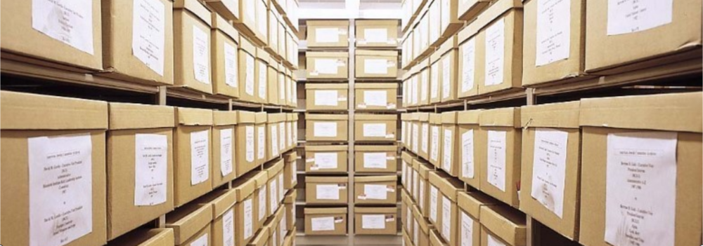

Reduce Your Overheads, Environmental Impact and Valuable Time
There is regularly a tonne weight of paper generated by a commercial aircraft throughout the course of its life, mainly through maintenance checks. This paper has historically been retained by the operator and managed meticulously in a climate controlled environment. Across a whole fleet, technical records retention and administration leads to significant overhead cost.
Aviation authorities are now accepting digital technical records; no more requirement to maintain in physical paper format.
Aviation asset owners and operators stand to benefit greatly from reducing their overheads where possible. Hardcopy records storage and management can be eliminated altogether through working with us to take your technical records into the digital era.
There is a significant environmental impact for your business to be proud of through allowing it to take the digital leap in terms of technical records. Just think of all those trees you will save by having your paper technical records recycled!
When a specific document, or set of documents, needs to be called up, you can quickly and easily find it at a moment’s notice from any connected device, anywhere. Your technical records will be fully indexed and word searchable and made available through a secure cloud service, potentially saving your business a fortune over time. There is also the added comfort of knowing that your data will never get lost or damaged.
When the lease is up, or the aircraft is getting sold, you can easily transfer any or all records by simply sharing a link with your counterparty.
Which area of the aircraft is most challenging to redeliver on time and on budget?

A recent survey carried out by one of the main industry statistical data analysis companies on leased aircraft operators highlights the fact that the most challenging aspects of an aircraft lease return is indeed “records”. These challenges typically lead to significant unforeseen cost. Moving to completely digital records will help you overcome this costly challenge completely, with a guaranteed positive impact on overall profitability.